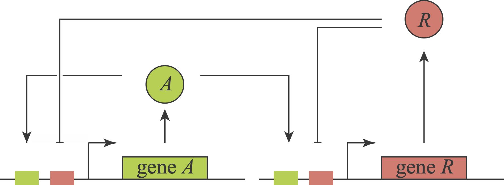

Exercise 11.1: Tuning delay oscillators with positive feedback
In this problem, we will explore the properties of a minimal 2 gene relaxation oscillator with positive and negative feedback loops introduced at the end of the chapter. The circuit for the oscillator is show below.

Different variants of this general circuit motif, sometimes implemented at the protein level, appear in natural systems, such as the cell cycle, and have been constructed and analyzed synthetically. Hasty and coworkers (PRL, 2002, Nature, 2008) analyzed and eventually constructed a version of this circuit. In their model, they included a cascade of molecular events that lead to binding of the activator and repressor to the promoter region, effectively adding time delay. Tsai and coworkers Science, 2008 modeled several circuits with this architecture, and incorporated intermediate steps leading toward binding of the promoter region which also gave rise to delay. In this problem, we will explore how this circuit enables relaxation oscillations, what role different parameters play, and whether time delays are, or are not, necessary for it to function.
To begin, note that the activator (A) and repressor (R) have the same promoter, so we will use the same function to describe their combinatorial regulation by both A and R. To explore the effects of time delays, we allow R to act on the promoter with a delay \(\tau\). When \(\tau=0\) the system is described by ordinary differential equations. When \(\tau>0\) it is described by delay differential equations. Defining \(a\) to be the concentration of A and \(r\) to be the concentration of R, we can model the dynamics of the circuit as
\[\begin{align} &\frac{\mathrm{d}a}{\mathrm{d}t} = f(a, r) - \gamma_a\,a,\\[1em] &\frac{\mathrm{d}r}{\mathrm{d}t} = f(a, r) - \gamma_r\,r, \end{align}\]
We will take \(f(a, r)\) to describe the regulation of the promoter to be governed by AND logic with single occupancy. By single occupancy, we mean that only the activator or repressor may be bound; they may not both be bound at the same time (for example, due to steric reasons). The resulting regulatory function, assuming some leakage \(\alpha\) is
\[\begin{align} f(a, r) = \alpha + \beta\,\frac{(a/k_a)^n}{1 + (a/k_a)^n + (r/k_r)^n}. \end{align}\]
Single occupancy regulation means that when \(a\) and \(r\) are beyond \(k_a\) and \(k_r\), respectively, the relative levels of \(a\) and \(r\) determine whether or not expression is activated. If \(a > r\), we get activation, but not when \(a < r\).
For simplicity, we have assumed the same Hill coefficient \(n\) for both activation and repression.
a) Show that the differential equations may be nondimensionalized to give
\[\begin{align} &\frac{\mathrm{d}a}{\mathrm{d}t} = \alpha + \beta \,\frac{(\kappa a)^n}{1+(\kappa a)^n +r^n} - \gamma\,a,\\[1em] &\frac{\mathrm{d}r}{\mathrm{d}t} = \alpha + \beta \,\frac{(\kappa a)^n}{1+(\kappa a)^n +r^n} - r, \end{align}\]
where all variables and parameters have been redefined to be dimensionless, and we have defined \(\gamma = \gamma_a / \gamma_r\) and \(\kappa = k_r / k_a\).
b) Show that in the absence of leakage (\(\alpha = 0\)), \(a = r = 0\) is a fixed point. Show also that for \(n > 1\), it is stable. Finally, show that the \(a = r = 0\) fixed point does not exist when \(\alpha > 0\) (even if \(n = 1\)). What does this imply about the role of leakage in this circuit when it oscillates? Going forward, we will assume \(\alpha > 0\).
c) Show that in the presence of leakage and absence of ultrasensitivity (\(n = 1\)), one fixed point exists and is stable. Hint: That the fixed point is stable is most easily shown graphically; you do not need to assess linear stability. Can the circuit have sustained oscillations without ultrasensitivity? Going forward, we will take \(n = 4\).
d) Finding the fixed points and determining their stability for this system is a bit sticky. Systems biology researchers bump up against this sort of problem all too often. In these cases, we need to resort to numerics. Nonetheless, it helps to have analytical guidance as we do so. Do one (or both if you are feeling motivated) of the following:
- Show that for \(n > 1\) there are either one, two, or three fixed points. This can be done graphically.
- Show that for the \(n = 4\) special case we are considering, there are either one, two, or three fixed points. This can also be done graphically (actually it follows if you do the first option), but can also be done analytically.
e) As we seek more analytical guidance, we can take advantage of a very useful result from dynamical systems, the Poincaré-Bendixson theorem. We will not derive (or even state) the theorem here, but will instead list two of its important consequences.
- If a two-dimensional dynamical system has no fixed points, it has a periodic solution.
- If a two-dimensional dynamical system has only one fixed point and it is unstable and not a saddle, the dynamical system has a periodic solution.
A saddle for a two-dimensional dynamical system is a fixed point with one positive eigenvalue and one negative eigenvalue. We can learn a lot about the system by finding the fixed points, evaluating how many there are, and then computing the eigenvalues if there is only one. So, our strategy for understanding what kind of dynamics we can expect for a given set of parameters is as follows.
- Numerically find the fixed point(s).
- If there is only one fixed point, compute its linear stability matrix.
- Compute the eigenvalues of the linear stability matrix.
- Given information about the fixed point and eigenvalues, we can classify the parameter set as follows (the colors associated with each are defined momentarily).
- If there is more than one fixed point, we’ll have to do more analysis. We’ll not address that case here, and all following classifications assume a single fixed point. (blue)
- If both eigenvalues have negative real parts, the fixed point is stable. We cannot definitively talk about the dynamics far from the fixed point, but we know that if the system nears the fixed point, it will get attracted to it and stay there. If the eigenvalues have nonzero imaginary parts, the system approaches the fixed point with decaying oscillations. Otherwise, the approach is monotonic. (orange)
- If one eigenvalue is positive and the other is negative, we have a saddle and we know the fixed point is unstable and the system will get pushed away from it, but we do not know if it will end up in a limit cycle. (green)
- If both eigenvalues have positive real part, the system has a limit cycle. (purple)
Our goal is to use these ideas to classify the dynamics of each set of parameters. We will do this step by step.
i) Write a function to numerically compute the fixed point(s). It is useful to know that you can do a bit of algebraic manipulation to convert the problem to finding the root of a single equation. You should also be able to bound the roots, both from above and below. You can use some of the root finding functions in the scipy.optimize module. Alternatively, because we are considering the special case of \(n = 4\), you can express the problem as finding the roots of a polynomial and you can use the np.roots() function to find them. If you choose to do it that way, be sure that you only include positive real roots.
ii) Write down the linear stability matrix (also referred to as the Jacobi matrix) for a fixed point \((a_0, r_0)\). (You need not solve for the fixed point, just refer to the fixed point as \((a_0, r_0)\) and assume you could find it.)
iii) Numerically explore the stability of the fixed points across different parameter regimes. We have already fixed \(n = 4\), and we are left with four parameters, \(\alpha\), \(\beta\), \(\kappa\), and \(\gamma\). So as not to have a more monumental computational and visualization task, we will make diagrams in two parts:
- Fix \(\alpha = 5\) and \(\beta = 80\) and vary \(\kappa\) and \(\gamma\) from 0.1 to 50. To make the diagram, for each set of parameters, find the fixed points and compute the eigenvalues if there is only one fixed point. You can use
np.linalg.eigvals()to do this. One way to display the results is by plotting a circle for each point you considered in the \(\gamma\)-\(\kappa\) plane. You can color the points according to the scheme laid out above. - Set \(\gamma = \kappa = 10\) and vary \(\alpha\) from 0.1 to 30 and \(\beta\) from 0.1 to 100. Make a similar plot.
Comment on what you see; specifically what guidelines should you use to help choose parameter sets that will give sustained oscillations? You can use these plots to guide you for the last part of the problem. You can also choose additional visualizations of this analysis if you like.
f) Choose or find a parameter set that imparts this system with a relaxation-type oscillation. In this type of oscillation, the activator comes up, rising quickly. As it does so, it turns on the repressor. Once the repressor accumulates, it shuts off the activator. The activator decays away and is no longer present, but the repressor is still present in high copy number. The repressor slowly decays away until it is low enough for the activator to self-activate again. Make a plot of the activator and repressor dynamics over time for this regime (this will require numerical solution of the ODEs). Also make a plot of the system trajectory in the \(a\)-\(r\) plane. Comment on what this analysis has taught you about this circuit and its function as a relaxation operator.
g) In what other ways would you like to investigate this circuit? What do you hope to learn about it?
h) If you feel like exploring some more, you can add an explicit time delay. That is, use \(f(a, r(t-\tau))\) or \(f(a(t-\tau_a), r(t-\tau_r))\) for your regulatory functions. How does time delay affect the overall dynamics? How does it impact the requirements on other parameters? Play around with the system and comment on what you see.